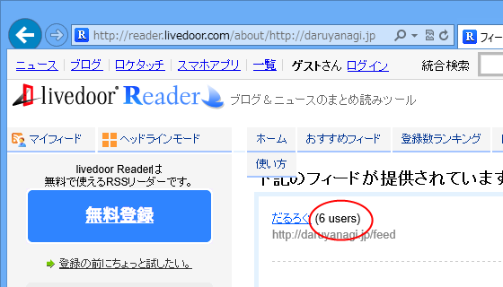
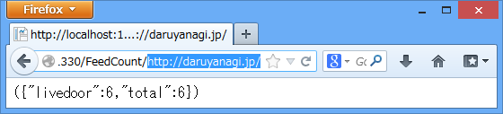

WebMatrix 3: フィードの購読者数を取得する（1：サーバーサイド編）
執筆日時：

こんな感じのソーシャル共有＋ RSS 購読ボタンをサイトに追加したいな、と思って、今朝少し WebMatrix と格闘していた。
SNS における共有数の取得部分は JavaScript だけで完結するのだけれど、RSS 購読数の取得部分は JavaScript だけでは少ししんどいのかなぁ。Same origin policy というものに引っかかってしまう。まぁ、こういうときは WebMatrix でサーバー側に RSS 購読数を取得するようにすればいいよね。
~/FeedCount/https://blog.daruyanagi.jp/ で https://blog.daruyanagi.jp/ の RSS 購読数を取得する FeedCount.cshtml を書いてみた。とりあえず今回は一番簡単な Livedoor Reader だけ。
@using System.Text @using System.Text.RegularExpressions@functions { public int GetSubscriptionCountOfLiveDoorReader(string url) { try { using (var client = new WebClient() { Encoding = Encoding.UTF8 } ) { var text = client.DownloadString( @"http://reader.livedoor.com/about/" + url); var m = new Regex( @"""subscriber_count""> ((\d+) users)") .Matches(text);
return m.Count == 0 ? 0 : m[0].Groups[1].Value.AsInt(); } } catch { return 0; } } }
Livedoor Reader の購読者数は、http://reader.livedoor.com/about/（URL）へアクセスすると取得できるらしい。

あとは正規表現で当該部分を取得すればいい。AsInt() は ASP.NET Web Pages の便利関数。知っておくと便利だよ。
@{
var url = string.Join("//",
UrlData.Where(_ => !string.IsNullOrEmpty(_)));
var livedoor = GetSubscriptionCountOfLiveDoorReader(url);
var data = new {
livedoor = livedoor,
total = livedoor,
};
Response.Clear();
Response.ContentType = "application/json";
Response.Write(Json.Encode(data));
Response.End();
}
今回は JSON で値を返すことにしました。JsonHelper を使うとカンタン。
結果はこんな感じ。

({"livedoor":6,"total":6})次回はこれを JavaScript から呼んで、Web ページの表示しましょう。
注記
なお、UrlDate で https://blog.daruyanagi.jp/ を取得しようとすると、

このようなエラー*1が発生したり、そのほかにもいろいろあるのだけれど、それについてはまた稿を改めたい。
*1:危険な可能性のある Request.Path 値がクライアント (:) から検出されました。